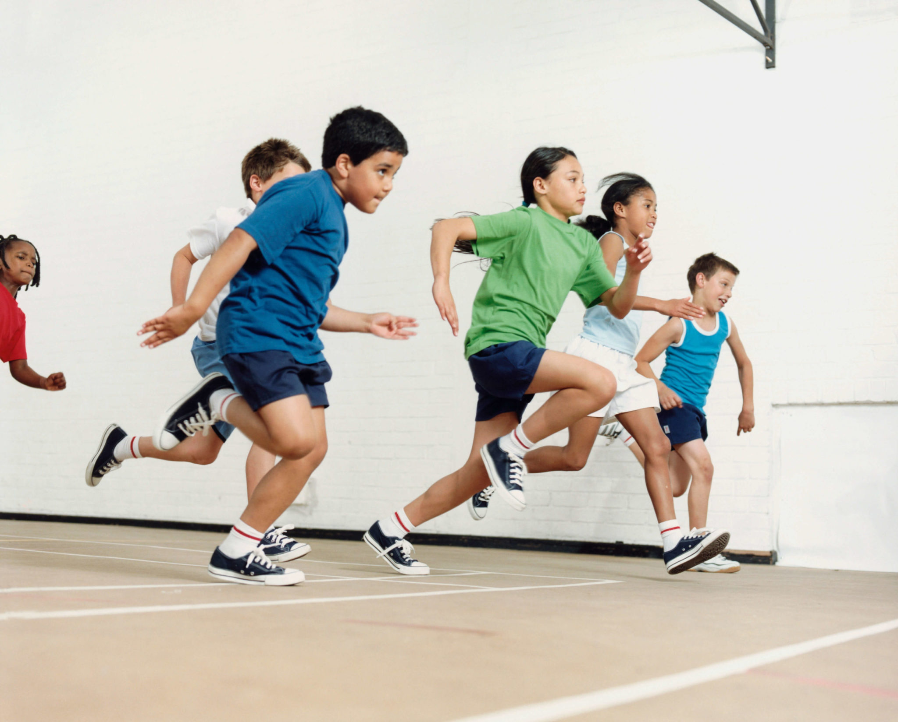
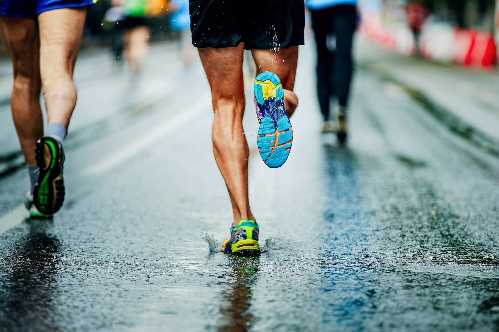
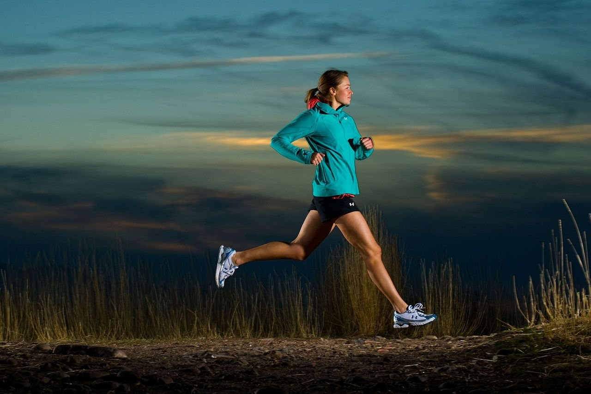
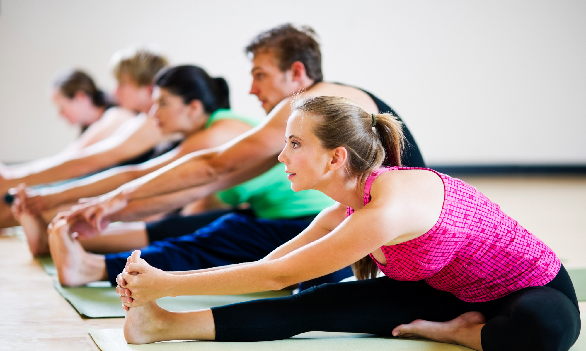
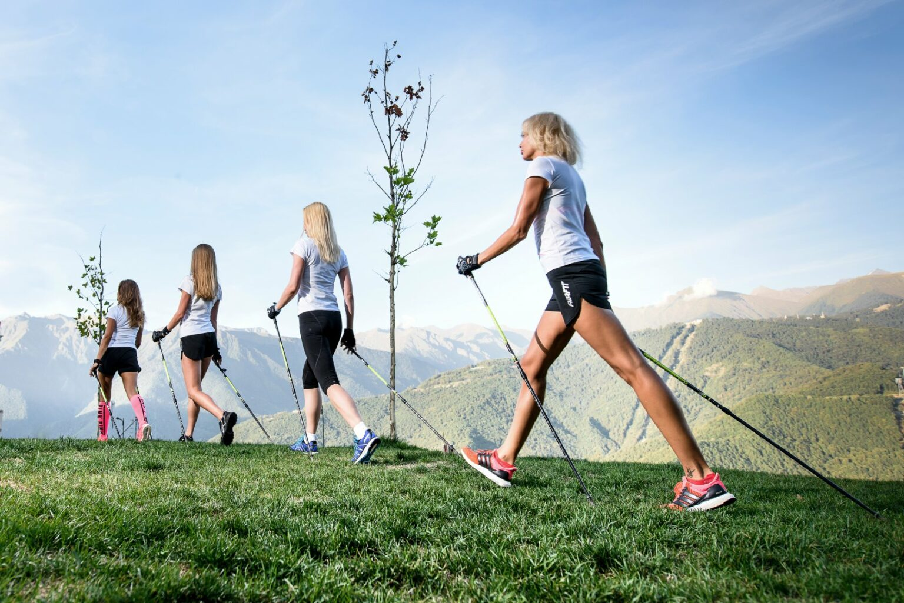
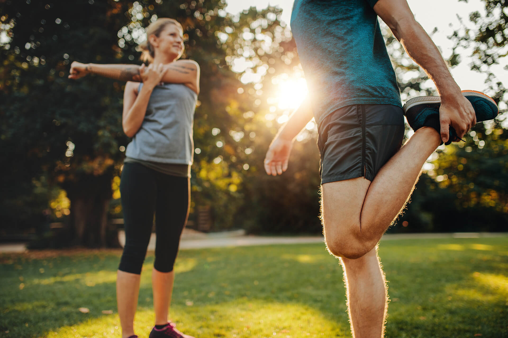
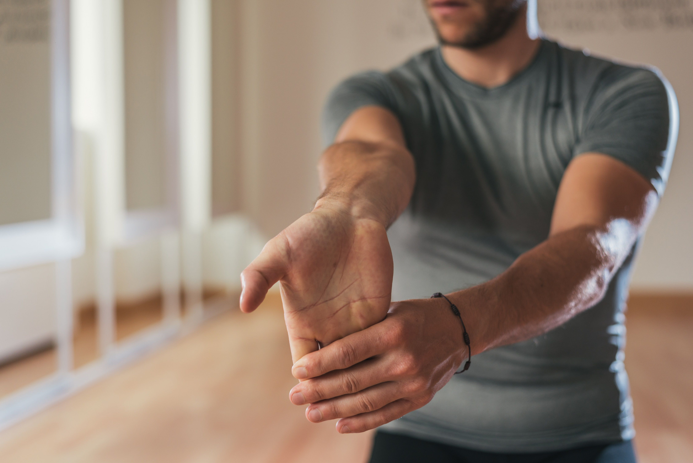
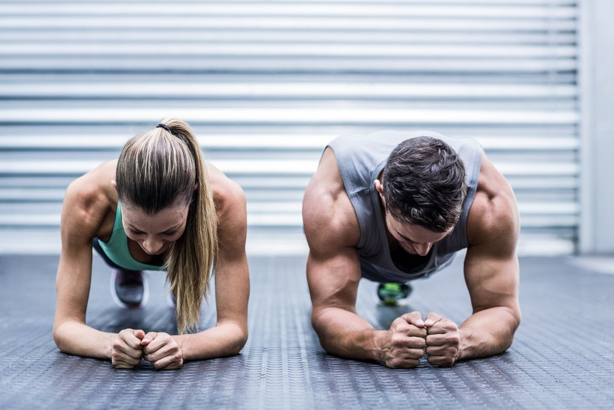

1. Различают пять основных двигательных способностей (физических качеств):

2. Физические способности это -

3. Быстрота бега на короткие дистанции зависит в основном от:
4. Какая активность позволит оценить скоростные способности человека?

5. Какая активность позволит оценить гибкость человека?

6. Для развития физических качеств все упражнения нужно делать как можно быстрее. Верно ли это утверждение?

7. Перед началом выполнения основных физических упражнений необходимо сделать разминку. Верно ли это утверждение?

8. В разминку перед началом выполнения основных физических упражнений стоит включить...

9. Какая активность позволит оценить выносливость человека?
10. Зависят ли твои будущие успехи в учебе, армии, труде, спорте от физических способностей?